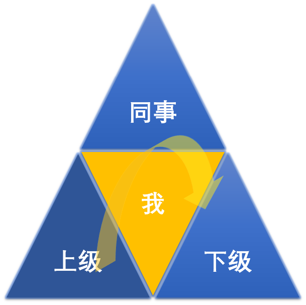

- 00 开篇词 你写的每一行代码，都是你的名片.md
- 01 从条件运算符说起，反思什么是好代码.md
- 02 把错误关在笼子里的五道关卡.md
- 03 优秀程序员的六个关键特质.md
- 04 代码规范的价值：复盘苹果公司的GoToFail漏洞.md
- 05 经验总结：如何给你的代码起好名字？.md
- 06 代码整理的关键逻辑和最佳案例.md
- 07 写好注释，真的是小菜一碟吗？.md
- 08 写好声明的“八项纪律”.md
- 09 怎么用好Java注解？.md
- 10 异常处理都有哪些陷阱？.md
- 11 组织好代码段，让人对它“一见钟情”.md
- 12丨组织好代码文件，要有“用户思维”.md
- 13 接口规范，是协作的合约.md
- 14 怎么写好用户指南？.md
- 15 编写规范代码的检查清单.md
- 16丨代码“规范”篇用户答疑.md
- 17 为什么需要经济的代码？.md
- 18丨思考框架：什么样的代码才是高效的代码？.md
- 19 怎么避免过度设计？.md
- 20 简单和直观，是永恒的解决方案.md
- 21 怎么设计一个简单又直观的接口？.md
- 22丨高效率，从超越线程同步开始！.md
- 23 怎么减少内存使用，减轻内存管理负担？.md
- 24 黑白灰，理解延迟分配的两面性.md
- 25 使用有序的代码，调动异步的事件.md
- 26 有哪些招惹麻烦的性能陷阱？.md
- 27 怎么编写可持续发展的代码？.md
- 28 怎么尽量“不写”代码？.md
- 29 编写经济代码的检查清单.md
- 30丨“代码经济篇”答疑汇总.md
- 31 为什么安全的代码这么重要？.md
- 32 如何评估代码的安全缺陷？.md
- 33 整数的运算有哪些安全威胁？.md
- 34 数组和集合，可变量的安全陷阱.md
- 35 怎么处理敏感信息？.md
- 36 继承有什么安全缺陷？.md
- 37 边界，信任的分水岭.md
- 38 对象序列化的危害有多大？.md
- 39 怎么控制好代码的权力？.md
- 40 规范，代码长治久安的基础.md
- 41 预案，代码的主动风险管理.md
- 42 纵深，代码安全的深度防御.md
- 43 编写安全代码的最佳实践清单.md
- 44 “代码安全篇”答疑汇总.md
- Q&A加餐丨关于代码质量，你关心的那些事儿.md
- 结束语 如何成为一个编程好手？.md
03 优秀程序员的六个关键特质
上一讲我们从“五道关卡”的角度讨论了如何写出优秀代码这个话题。对我们每个程序员个体来说，其实第一道“程序员”关卡最重要。没有优秀的程序员，就没有优秀的代码。那么，什么样的程序员才是优秀的程序员呢？
如果去问一个程序员，得到的答案有可能是，“写的一手好代码，做过几个大项目，设计、编程样样不在话下”。如果去问程序员的同学，得到的答案有可能是，“刚毕业就去了大厂，中秋节发的月饼羡慕死个人” 。如果去问程序员的同事，得到的答案有可能是，“人挺好，干活挺快的” 。如果去问HR，得到的答案有可能是“省钱、出活”。
你看，这些答案都没什么毛病，各有各的道理。你的答案是怎样的呢？我自己工作中见过特别多优秀的程序员，从他们身上发现了不少共性的特质，我总结为以下六项，下面一一给你介绍。
掌握一门编程语言
第一点很重要，优秀的程序员需要写的一手好代码，再简单来说，最起码需要能够熟练操控一门编程语言。
我们都会使用筷子，吃饭的时候，我们不需要有意识地控制着筷子的力度、开合和角度，也能准确地使用它。这个使用筷子的效率，是我们小时候长期练习的结果。每个人拿筷子的方法可能会有些差异，但是都不影响我们现在精准地、高效地使用筷子。
编写程序也是这样。熟练了之后，很多语法、语句在我们编写程序的时候，会下意识地就流露出来。如果我们设计一个线程类，下面的代码里，我觉得至少class和extends这两个关键字的使用是不需要大脑有意识地参与的。
public class MyThread extends Thread {
...
}
如果把编程语言看成一套功法，比如降龙十八掌，这套功法练得越多，练得越纯熟，用起来越得心应手。武侠小说里，一套功法只有练了全套，才有最大的威力。对于编程语言，我们了解得越多，熟知的招式就越多，可选择的范围就越大，我们就有更多的活动空间和解决问题的办法。
编程语言，基本上是相通的。掌握了第一门编程语言后，第二门语言学起来就快很多，第三门语言学起来更快。现在我们几乎都是多语言使用者，但一定要先精通一门语言，达到像用筷子那样的熟练程度。
解决现实的问题
掌握了一门编程语言，然后呢？代码是要解决具体的问题的，我们需要通过编程语言把解决问题的办法和思路表达出来。
要解决具体的问题，仅仅做到熟练使用编程语言是远远不够的，我们还需要更多工具。如果做前端，需要理解HTML和浏览器；如果做后端，需要掌握数据库和操作系统；如果做云计算，需要掌握Kubernetes等等。就像学了分筋错骨手，还要学降龙十八掌；学了七十二路空明拳，还要学左右互搏。俗话说，艺多不压身，工具箱永远都不嫌满。
有了工具还不够，优秀的程序员还要深入理解问题，懂得问题的最核心价值。只有理解了问题，看到了解决问题的价值，我们才能够真正解决好问题，并且从中获得满满的成就感。我们一定要记得，程序员的存在不是为了写代码，而是为了解决现实问题，实现现实价值。
真实的作品，都带着我们对于现实问题的理解。而打磨一个这样的作品，需要缜密的逻辑、突破创新和贯彻执行。通过使用合适的工具，把简单的、一行一行的代码，耐心地粘合、打磨成优秀的作品。
如果说花样的工具是外家功夫，思维能力和行为能力可以算是内功。
优秀的程序员，是一个内外双修的程序员。如果一个程序员可以熟练使用工具，有清晰的解决问题思路，能明晰地传达产品价值，那么他编写代码就不存在什么巨大的困难了。
发现关键的问题
有了工具，遇到问题能解决掉，我们就可以做事情了。优秀的程序员还有一项好本领，就是发现关键的问题。能够发现关键的问题，我觉得是一个好程序员和优秀程序员的分水岭。
优秀的程序员，能够发现一门编程语言的缺陷，一个顺手工具的局限。所以，他知道该怎么选择最合适的工具，该怎么避免不必要的麻烦。
优秀的程序员，能够发现解决方案背后的妥协和风险。所以，他可以预设风险防范措施，设置软件的适用边界。
优秀的程序员，能够敏锐地观察到产品的关键问题，或者客户未被满足的需求。所以，他可以推动产品持续地进步和演化。
能够发现关键的问题，意味着我们可以从一个被动的做事情的程序员，升级为一个主动找事情的程序员。
能够发现关键的问题，往往需要我们对一个领域有很深入的研究和深厚的积累，并且对新鲜事物保持充分的好奇心和求知欲。
掌握一门编程语言，解决现实的问题，能发现关键的问题，做到这三点，你就已经是一名优秀的程序员了。如果说优秀程序员有一个评价标准的话，这三条一定是硬性指标，接下来再介绍三条软性指标。
沉静的前行者
首先，优秀的程序员，一定是懂得妥协，懂得选择，一步一步把事情沉静地朝前推动的人。
如果真的较起真来，每一行代码，就像孔乙己的茴香豆，都有不止四样的写法。可是，最终的程序，只能选择唯一的一种。优秀的程序员都有在不断平衡、不断妥协中推动事物前行的能力和修为。
如果一个人说要一个完美的代码、完美的算法，完美的程序、完美的产品，我立刻就会非常紧张。完美是不存在的，所以我们才追求完美。对完美的过分追求，可能是一个代价高昂，收获甚小的行为。很多时候，我们不需要完美的东西。如果我只是想看看泰山山顶的日出，你就不要问我是爬上去的还是乘索道上去的了。
对完美的理解，也是千差万别的。如果你的完美和我的完美发生碰撞，一定有一方需要妥协，我们才可以共同迈出下一步。
而且，完美也可能意味着不承认缺陷，不承认未知。这样，我们可能在心理上就不会对代码的未知风险做出充分的预判，留出足够的安全缓冲空间。
我们写的每一行代码，都可能存在问题。有时候，我发现别人的代码的问题；有时候，别人发现我的代码的问题。我们最后都会明白，要坦诚地面对别人的问题，也要坦然地面对自己的问题。在解决问题和帮助别人解决问题中，我们把一个产品变得越来越好，问题越来越少。
可以依赖的伙伴
其次，优秀的程序员是他人可以依赖的伙伴。
如果我们把软件开发看成一个循环的流水线，参与其中的每个人，都要接受来自上一级的输入内容，在当前环节和同事合作，创造面向下一级的输出内容。优秀的程序员，知道团队合作的重要性，是一个优秀的团队成员。他在团队中能够快速学习、成长，变得越来越优秀，也能够帮助其他团队成员变得越来越优秀。

优秀的程序员是一个领导型的人。他能够倾听，持续地获取他人的优秀想法，以及不同的意见。他能够表达，准确地传递自己的想法，恰当地陈述自己的意见。他是一个给予者，给别人尊重，给别人启发，给别人指导，给别人施展才华的空间。他是一个索取者，需要获得尊重，需要获得支持，需要持续学习，需要一个自主决策的空间。他能够应对压力，承担责任，积极主动，大部分时候保持克制和冷静，偶尔也会表达愤怒。他具有一定的影响力，以及良好的人际关系，能够和各种类型的人相处，能够引发反对意见，但是又不损害人际关系。他知道什么时候可以妥协，什么时候应该坚持。
上面的这些，通常称为“软技能”。如果说，编程语言、花样工具、逻辑思维、解决问题这些“硬技能”可以决定我们的起点的话，影响力、人际关系这些“软技能”通常影响着我们可以到达的高度。因为，无论我们是加入他人的团队，或者组建自己的团队，我们只有在团队中才能变得越来越出色，做的事情越来越重要。所以，我们需要成为优秀的团队成员，接受影响，也影响他人。
时间管理者
最后我想和你分享的一点是，优秀的程序员是高效的时间管理者。
时间总是我们最大的障碍，优秀的程序员更是如此。没完没了的会议，没完没了的讨论，没完没了的学习，没完没了的需求，没完没了的bug，时间拦住了我们的雄心壮志和大好宏图。
时间面前，人人平等，没有人一天的时间比别人多一秒。优秀的程序员会更好地管理时间，或者提高效率，或者用好时间。
你有没有听说过这样的故事？ 一家工厂的发动机坏了，请了很多人都没有修好。无奈，请了一位工程师，他听了听声音，在发动机上画了一道线，说：“打开，把线圈拆了”。果然，发动机就修好了。不管这个小故事是真的也好，假的也好，类似的事情在软件公司时时刻刻都在发生。有经验的程序员三分钟就能发现的问题，外行可能需要折腾好几天。持续地提高我们的硬技能和软技能，可以让我们做事情更快更好。
坚持把时间用在对的地方，用在价值更大的地方。事情总是做不完的。一般的工程师，都有一种打破砂锅问到底的精气神，这是好事。可是，这顺便带来了一点点的副作用，很多人有一点点小小的强迫症，很多事情，喜欢自己动手整个清楚明白。可是，事情又特别多，很多事情根本就顾不上。怎么办呢？
要做只有你才能做的事情。是的，有很多事情，只有你可以做，只有你做得最快最好。其他的同事也是一样的，有很多事情，只有他们能做，只有他们做得最快最好。选择最合适的人做最合适的事，这不仅是领导的工作分配，也可以是我们自己的协商选择。
事情做不完，就需要面临选择。要坚持做需要做的事情。不需要的、不紧急的、价值不大的，我们可以暂时搁置起来。一个人，能做的事情是有限的，能把最重要的事情最好，就已经很了不起了。
学会选择，是我们进阶道路上的一个必修课。
总结
最后，总结一下，优秀的程序员是什么样的？ 优秀的程序员可以熟练地使用必要的工具，发现和解决复杂的现实问题；优秀的程序员可以在一个团队里，高效沉静地把项目和团队一步一步地朝前推进。
现在，把我们今天讲的优秀程序员六大特质当作一套自测题，和自己对照一下，自己在哪些方面做得比较好？在哪些方面还需要继续精进呢？
欢迎你留言聊聊自己的经验，如果有什么问题或困惑，也可以提出来我们一起讨论。
如果今天的内容对你有帮助，也请你分享给身边的朋友，和他一起精进。
© 2019 - 2023 Liangliang Lee. Powered by gin and hexo-theme-book.